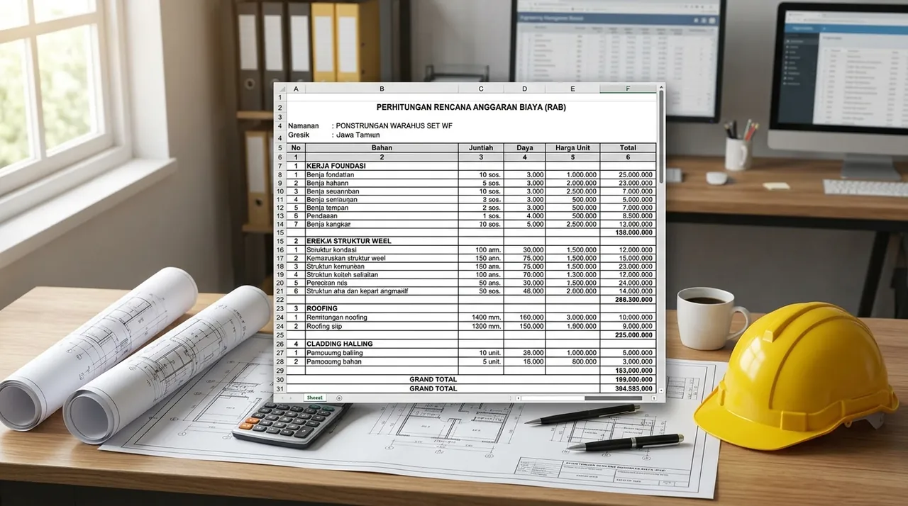

1. Rincian Komponen Pekerjaan Utama dalam RAB Gudang Gresik
Struktur pembiayaan gudang dibagi ke dalam 5 pos pokok: pekerjaan persiapan & tanah, pondasi substructure, rangka baja superstructure, arsitektur lantai & dinding, serta mekanikal-elektrikal.
Pekerjaan persiapan mencakup mobilisasi alat berat, pengukuran bouwplank, serta uji tanah sondir CPT. Pada pos substructure, pengadaan dan pemancangan tiang pancang spun pile menjadi komponen vital untuk mengunci stabilitas gedung di atas tanah aluvial Gresik.
Pekerjaan superstructure mencakup balok portal WF, kolom pedestal, gording galvalum, dan ikatan angin (bracing). Sementara itu, pekerjaan plat lantai beton K-350 tebal 18 cm dengan wiremesh M10 menjamin permukaan lantai tahan beban forklift bermuatan penuh.
- Kunci Kontrak Lump-Sum: Gunakan sistem kontrak lump-sum fixed price berbasis BoQ detail agar terhindar dari risiko eskalasi harga material di kemudian hari.
- Pilih Mutu Beton K-350: Untuk lantai gudang lintasan forklift, jangan kompromi di bawah mutu K-300 agar lantai tidak mudah retak dan sompal.
- Drainase Eksternal: Perhitungkan debit air hujan atap 1.000 m² dengan menyediakan saluran keliling U-Ditch minimal lebar 40 cm.
2. Simulasi Perhitungan RAB Gudang Dimensi 1.000 m² di Manyar Gresik
Simulasi biaya pembangunan gudang ukuran 25 x 40 meter (luas 1.000 m²) dengan tinggi kolom 8 meter di wilayah Gresik menghasilkan angka sekitar Rp 2,82 Miliar.
Dalam simulasi proyek standar heavy-duty, pekerjaan pondasi dan tanah menyerap sekitar Rp 415 juta, struktur rangka baja WF menyerap Rp 1,02 Miliar, plat lantai beton hardener Rp 580 juta, atap dan insulasi Rp 268 juta, dinding perimeter Rp 188 juta, serta MEP & saluran luar Rp 255 juta.
Angka tersebut ekuivalen dengan biaya rata-rata sekitar Rp 2.823.000 per meter persegi (di luar PPN), menawarkan rasio biaya-kinerja yang sangat efisien bagi pelaku usaha logistik dan manufaktur.

Analisa Harga Satuan Pekerjaan (AHSP) transparan dan detail volume BoQ menjamin efisiensi proyek.
3. Tabel Komparasi Biaya per Meter Berdasarkan Spesifikasi Gudang
Perbedaan spesifikasi mutu beton, kapasitas rak bertingkat, dan ketebalan baja menentukan variasi biaya per meter persegi.
Tabel berikut merangkum estimasi biaya per meter persegi untuk berbagai fungsi gudang di koridor Gresik dan sekitarnya.
| Tipe Bangunan Gudang | Estimasi Biaya / m² | Kapasitas Beban Lantai | Spesifikasi Rangka Baja |
|---|---|---|---|
| Gudang Transit Sederhana | Rp 2.400.000 – Rp 2.800.000 | 2.000 kg/m² (K-250 tebal 12 cm) | Baja WF 200 - WF 300 |
| Gudang Logistik Standar | Rp 2.800.000 – Rp 3.400.000 | 3.500 kg/m² (K-300 tebal 15 cm + Hardener) | Baja WF 250 - WF 400 |
| Gudang Racking Bertingkat (High-Bay) | Rp 3.500.000 – Rp 4.200.000 | 5.000 kg/m² (K-350 tebal 20 cm Super Flat) | Baja WF 400 - WF 500 Heavy Duty |
| Pabrik + Cold Storage Terinsulasi | Rp 4.500.000 – Rp 6.200.000 | Lantai Insulasi XPS + PU Screed K-400 | Baja WF Galvanized / Epoxy C4 Coating |
4. Strategi Menekan Biaya Bangun Gudang Tanpa Mengorbankan Mutu
Efisiensi biaya dapat dicapai melalui pemilihan profil baja kastela, optimasi ketinggian dinding bata, dan pemilihan kontraktor satu pintu terintegrasi.
Penggunaan balok kastela (castellated beam) untuk bentang atap di atas 24 meter dapat mengurangi tonase baja hingga 15-20%. Selain itu, membatasi dinding bata setinggi 3 meter dan melanjutkannya dengan cladding spandek galvalum ke atas memberikan penghematan biaya dinding yang signifikan.
Pertanyaan yang Sering Diajukan (FAQ)
Kesimpulan Praktis
Penyusunan RAB gudang yang akurat adalah pondasi finansial bagi keberhasilan ekspansi bisnis Anda di Gresik. Jangan biarkan investasi terhambat oleh perencanaan yang kurang matang.
Dapatkan proposal teknis dan simulasi RAB transparan dari tim estimator Kontraktor Bangunan sekarang juga melalui layanan konsultasi WhatsApp kami.